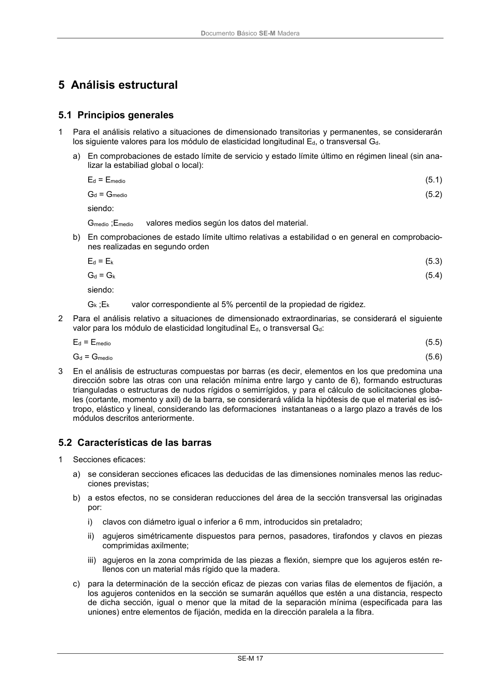

DB-SE-M · 5.2 Características de las barras · versión 2019-12-20 · capa oficial
Formatos: JSON compacto · Markdown · PDF fuente
Ámbito del documento · texto del ámbito · documento y tablas
ID técnico a0053 · PDF pág. 23-24 · jerarquía no validada por persona · contrastado con el literal de la página 23 (candidato tipográfico); no validado por persona · padre: raíz
5.2 Características de las barras 1 Secciones eficaces: a) se consideran secciones eficaces las deducidas de las dimensiones nominales menos las reduc- ciones previstas; b) a estos efectos, no se consideran reducciones del área de la sección transversal las originadas por: i) clavos con diámetro igual o inferior a 6 mm, introducidos sin pretaladro; ii) agujeros simétricamente dispuestos para pernos, pasadores, tirafondos y clavos en piezas comprimidas axilmente; iii) agujeros en la zona comprimida de las piezas a flexión, siempre que los agujeros estén re- llenos con un material más rígido que la madera. c) para la determinación de la sección eficaz de piezas con varias filas de elementos de fijación, a los agujeros contenidos en la sección se sumarán aquéllos que estén a una distancia, respecto de dicha sección, igual o menor que la mitad de la separación mínima (especificada para las uniones) entre elementos de fijación, medida en la dirección paralela a la fibra. DocumentoBásico SE-M Madera SE-M 18

PDF fuente redistribuible: copia fiel enlazada en esta página (SHA256 verificado).